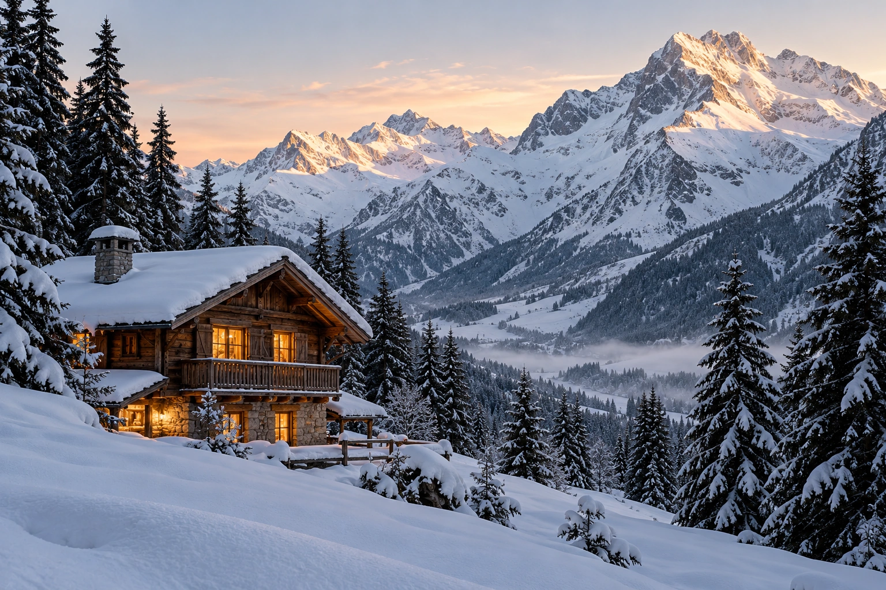

France / The Alps
The village offers evening freedom on foot; Solaise gives a high-mountain setting with lift-dependent access. A private chalet suits groups who prefer a shared table.
France / The Alps
Stone and timber, purposeful mornings on snow, and a softer pace back in the village.
Your preferences. Thoughtful options. Personal attention throughout.

France / The Alps
The village offers evening freedom on foot; Solaise gives a high-mountain setting with lift-dependent access. A private chalet suits groups who prefer a shared table.
Compare the setting, the space and how each property fits your plans. These are starting points; your shortlist can be developed further.
Val d’Isère, France
For accommodation by the skiing rather than an isolated mountain stay.
Details checked · 22 Oct 2026
Solaise, above Val d’Isère, France
For the atmosphere of sleeping high on the mountain rather than in the village.
Details checked · 22 Oct 2026
| Property / setting | Style / suggested fit | Accommodation | Facilities | Season |
|---|---|---|---|---|
| Airelles Val d’Isère Val d’Isère, France | For accommodation by the skiing rather than an isolated mountain stay. | Hotel rooms and suites; group configurations confirmed individually. | Ski access and wellness facilities; equipment and lessons arranged around the guest. | Seasonal opening and all services are reconfirmed for your dates. |
| Le Refuge de Solaise Solaise, above Val d’Isère, France | For the atmosphere of sleeping high on the mountain rather than in the village. | Mountain hotel accommodation; choose layout around the group. | Setting at 2,551 metres; arrival and lift-access constraints must be planned. | Confirm winter opening, lift access, luggage arrangements and last arrival times; do not assume unrestricted road access. |
Browse Hotels & Private Stays ↗ · Private villas & group stays ↗
Val d’Isère, France
Hotel dining or a separate village reservation.
Solaise, above Val d’Isère, France
Dining on the mountain with service details confirmed for the stay.
Menus, service days, age policies and availability are confirmed individually.
A different mountain afternoon for guests who would like time beyond the pistes. Share this priority early so spaces can be explored before arrival.
Season Winter, with suitable snow conditions
Operator reservation request; snow conditions, ages, suitability and available sessions confirmed individually.
No date-specific event is currently verified for this chapter. Ask us what is happening around your visit.
Browse Events & Experiences ↗Begin close to the lifts, in a hotel chosen for its location or a private chalet with room for everyone. Equipment can be fitted and lessons timed to the group, with separate plans for confident skiers and those trying their first turns. Meet over mountain lunch, then choose another run or an afternoon at the spa.
Non-skiers can explore winter walks or a gentle village day. Dog sledding in the Manchet Valley is another possibility listed by the local tourism office. It is the kind of experience worth mentioning early: spaces can fill before arrival, and we will explore dates, conditions and suitability with the operator.
For couples, dinner might be a quiet table for two; for friends, an evening out with the return arranged; for a family, a chef-led chalet supper after a full day outside. Your preferred pace shapes the plan.
Our attention continues beyond the reservation. Contact us 24/7 during your stay, including for a change of plan or a spontaneous idea. We explore suitable options and confirm the arrangements you choose.
Tell us which setting or property appeals, approximate dates and how many people are travelling. You do not need a complete itinerary.
Begin an EnquiryContact us 24/7. Our team will respond personally; email info@zelrocprive.com whenever it suits you.